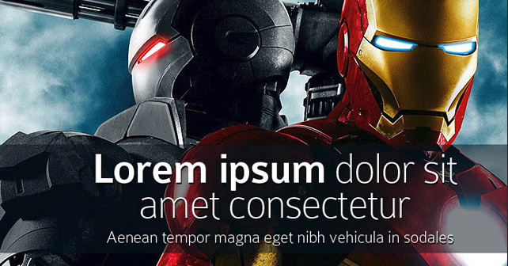

这篇文章的作者是本地任务对接平台Zaarly的创始人Eric Koester
这个世界有很多怀疑论者。没太多钱，也没太多经验就要去做一件之前别人没做过的事，胜率也太渺茫了。也别对创业者感到遗憾(尤其在这个人人都想创业者和创业公司能够产出一些变革的时代)，但其中还是得靠坚持的。
最难的事就是界定这个创业公司/项目到底是属于远见(vision)还是错觉(delusion)。这也是创业者花费时间来回踱步思考的问题，但最后仍然不确定自己的到底是属于哪个。如果你是一个创业者，你应该能看到未来，知道后来有一天会成什么样，并极力相信自己是对的。连大师 Steve Blank都说创业是种信仰。
但(对现在的)深度洞察并不一定就能看到未来。
这也是为什么看清未来是如此之难。最优秀的创业者有足够的信息、经验和理论去分析什么是趋势(或者最起码是它们愿意相信的"趋势")。Steve Jobs看到了一个移动设备的未来，Bill Gates之前就相信看到操作系统(和电脑)会是日用品，Michael Dell见到电子设备销售的变革，Jack Dorsey看到了沟通和支付的未来。但这正是创业者该做的事—他们有远见，然后做出一家公司去迎合那个未来趋势。你能理清线索，预测未来。问题就在于这个未来可能是6个月之后，也可能是两年甚至是更长的10年之后的事。那也就是为什么说有远见可能值得庆幸，但也可能是可悲(预想的未来兴许要特别长的时间才能成真)。
而一旦看到了这个未来，优秀的创业者通常就不会动摇。就Zaarly而言，我可以说结合移动设备和交易的未来是很清晰的。而且我认为这很赞。但究竟这个未来多久才能来呢？好吧，这就是难点了。所有环节都在准备，智能手机，网络速度，无处不在的信息，实时性等等等等。但所有这些环节都能准确地结合起来吗？要有最恰当的产品，节奏最对的迭代，甚至还得有最完美的各环节的匹配。远见就是这样，它有时会很吓人，但也是有了远见才可以做出那些很赞的事情。
再强调一次，我很确信所有这些环节都会完美地组装起来，让那个想象中的未来发生。但是，我仍在把赌注压在时间上，这些到底何时能实现？对公司创始人而言，远见是必须要有的。最好的那批人就是能够感知风在它们背后吹，并且借着这股东风把需要400个板块叠加才能实现的东西给做好。那剩下的其他人呢，好吧，就是在远见和错觉那条界线之间徘徊。你需要的就是远见加上耐心，再掺入一点急不可耐。听起来很怪，但确实是这样的。如果你没有在深夜凝望天花板，然后扪心自问那个未来到底会在60天后到来，还是在半年之后甚至更久，那你就还没真实地体验别样的创业旅程。
最后，不要因为别的质疑者就怀疑自己的远见。如果你已经做了些功课，你应该能看到一些，只是可能没有人知道到底这个"未来"会在什么时候到来。
结果是不一定(对现在)有深刻洞察就能看到未来，而是需要一点耐心加上一点急迫(耐心的是等各环节都准备好，急迫的是自己得去做些什么事让这些板块更快配合好)，让那个"未来"到来。